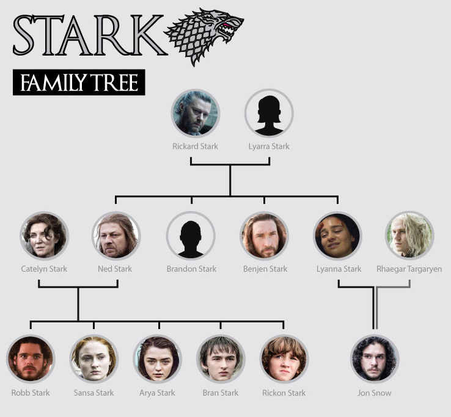

Sansa's story is incredibly twisted and dark.
Initially betrothed to Prince Joffrey Baratheon, the heir to the Iron Throne, Sansa travels to King's Landing, but essentially becomes a hostage of House Lannister following the brutal execution of her father Lord Eddard Stark. Under the treacherous tutelage of Cersei Lannister, Margaery Tyrell, and Petyr Baelish, Sansa becomes well versed in politics and court intrigue, even as she suffers being humiliated, put down, and emotionally manipulated.
Even after escaping the capital and returning to her childhood home of Winterfell, she endures further hardship at the hands of House Bolton while married to Ramsay Bolton. She escapes from Winterfell with the help of her father's former ward, Theon Greyjoy, and her sworn-sword, Brienne of Tarth, and reunites with Jon at Castle Black. Along with the support of the Free Folk, the knights of the Vale, and certain Northern houses, the two of them retake Winterfell from Ramsay, and Sansa becomes the Lady of Winterfell, whilst Jon is declared King in the North.
Angry at Jon for abdicating his title in favor of House Targaryen, she finds enmity with Queen Daenerys Targaryen, who refuses to accept Northern independence in her restoration and quest for the Iron Throne. Following the Battle of King's Landing and Daenerys's subsequent assassination, Sansa declares the North an independent kingdom and is finally crowned Queen in the North.
Sansa is the eldest daughter of Lord Eddard Stark and his wife, Lady Catelyn, sister of Robb, Arya, Bran, and Rickon Stark, and "half-sister" of Jon Snow
Sansa starts off as a very frivolous young girl whose dream is to become queen one day and live the life of a princess. She goes through a great transformation after all the trials she is put through and becomes an intelligent, cunning young woman who does not accept any trangressions against herself or her family. She learns how to navigate the court and the politics of Westeros through observation and firsthand experience. Her priorities change from protecting only herself and her interests to protecting her family.
Author: Ruchi Maheshwari